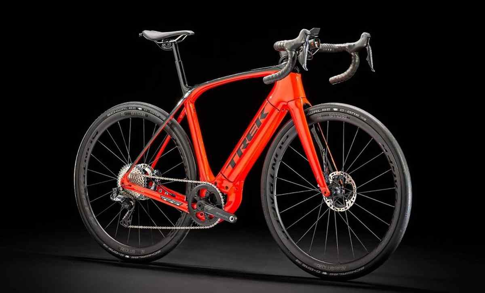
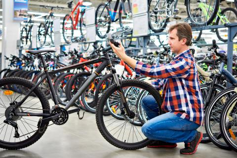
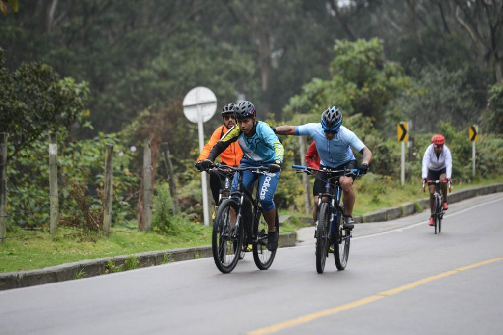

16 april 2022
La bicicleta, coloquialmente llamada bici (también denominada como cicla o ciclo en Colombia y Cuba, chiva o rila, en México y cleta o bici en Chile),es un vehículo de transporte personal de propulsión humana. Es impulsada por el propio viajero, que acciona el vehículo con el esfuerzo muscular de las piernas, en particular mediante pedales o manivelas.
Sus componentes básicos son dos ruedas, 3 generalmente de igual diámetro y dispuestas en línea... Continuar leyendo...
20 de mayo 2022

Las bicicletas eléctricas de alta gama se están convirtiendo en una nueva tendencia en el mundo del ciclismo, ofreciendo una experiencia única y un rendimiento excepcional. Descubre más acerca de estas increíbles bicicletas y cómo pueden mejorar tu experiencia de ciclismo.
10 de junio 2022

Con tantas opciones de bicicletas disponibles en el mercado, puede ser difícil elegir la perfecta para tus necesidades. En este artículo te presentamos una guía para ayudarte a tomar la mejor decisión al elegir tu bicicleta.
5 de julio 2022

Explora algunas de las rutas de ciclismo más hermosas y emocionantes del mundo, desde la costa de California hasta las montañas de los Alpes. Descubre qué hace que estas rutas sean tan especiales y planifica tu próxima aventura en bicicleta.